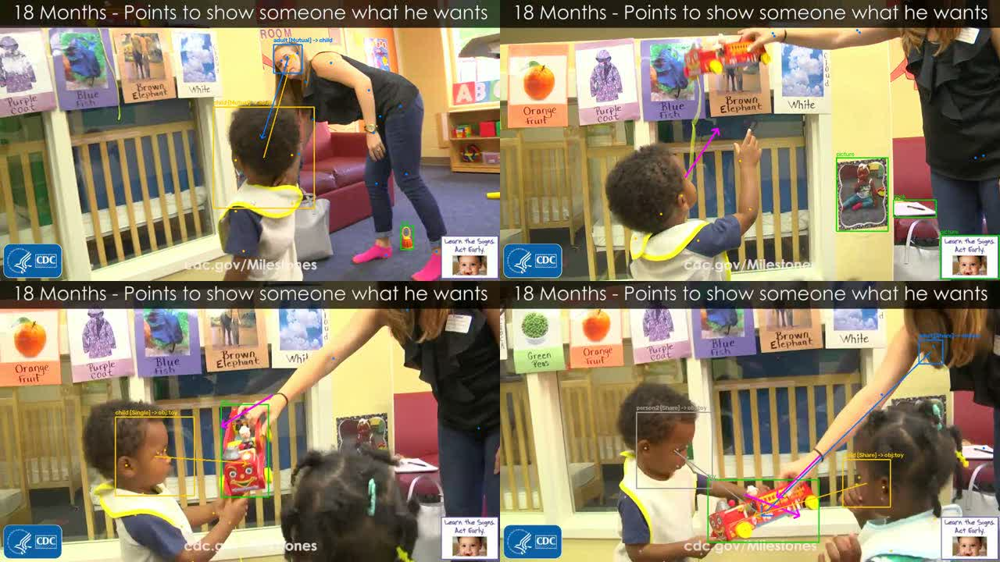
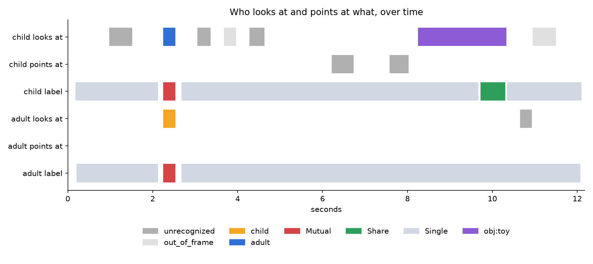

Lakshya Gupta, November 2026. One camera. Everything left of the research box runs today.
1. PerceptionPeople, 17 body points, face box, objects. YOLO11 pose, YOLO-World
›
2a. GazeWhere each person looks. Gaze LLE heatmap, then which face or object it lands on
›
2b. GestureArm pointing and what it points at. Rules on body points
›
Scene graphWho looks at whom matrix, labelled Single, Mutual or Share (GazeTransformer)
›
3. Temporal flowStable timed segments per person
›
RJA / IJAResearch layer, not built

CDC milestone clip, 18 months, "points to show someone what he wants" (12 s, public domain). Top left, Mutual gaze between adult and child. Top right, pointing detected (pink). Bottom left, child looks at the toy. Bottom right, two children Share attention on the toy.

Output timeline. Every bar is a timed segment the research layer can read.
- Mutual gaze, child and adult, at 2.2 s
- Child points twice, at 6.2 s and 7.6 s
- Child looks at the toy from 8.2 s to 10.3 s
- Share on the toy at 9.7 s
- Runs at about 3 s of compute per second of video on a laptop RTX 4070
| Stage | Model or method | Source | Trained by us |
|---|
| People and body points | YOLO11n pose with ByteTrack tracking | Ultralytics, pretrained on COCO | No |
| Objects | YOLO-World v2 large, open vocabulary (toy, ball, book, doll...) | Ultralytics, pretrained | No |
| Gaze | Gaze LLE (frozen DINOv2 ViT B/14 with in or out of frame score) | Ryan et al., CVPR 2025 | No |
| Gaze target rule | Gaze point inside a face box means looking at that person | AGT, Deng et al., AAAI 2026 | Rule |
| Pointing | Straight, raised arm, ray from elbow through wrist | Our rule | Rule |
| Single, Mutual, Share | Adjacency matrix labels | GazeTransformer, de Belen et al., 2023 | Rule |